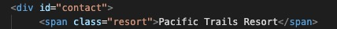
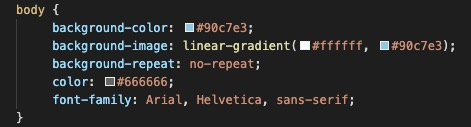
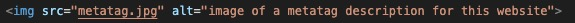
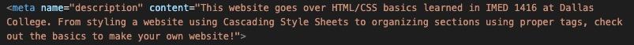

Welcome to creating your first website! I learned a lot this semester in Web Design at Dallas College. Follow along for some basic tips when it comes to designing your first website!
Starting a Website
Starting your own website is easy! You just need a great idea to get started. Think of something you're passionate about or something you think people need to know more about. For example, say you're passionate about climate change. You want to get the information out there, but how do you organize your thoughts for a website? You'll need to come up with a few subjects per each section you want to discuss. If you want to do a single webpage, you can be more broad. If you want to have multiple webpages, you'll need a few ideas to break it into multiple pages. Let's say you decided to make a website on Climate Change with an overview, organizations trying to solve climate change, climate change in the media, and how to get involved. That's 4 sections of a single webpage OR 4 individual webpages that can make up a single website! You can create a site map to see how the pages will flow if using multiple webpages. But how will you organize that information? That's where a Wireframe comes in handy. A basic wireframe can help you decide your webpage layout per each page.
HTML Basics
Now that you have an idea, you'll need to know how to start coding your webpage! Below are some basic tags for different elements used when creating a program and how to use them.
Elements
| Tags | Description |
|---|---|
| <!DOCTYPE html> | The DOCTYPE "tag" isn't actually a tag. It is a declaration at the start of your file for a browser to know what type of document to expect. This "tag" is for HTML5 and does NOT have a closing tag. |
| <html></html> | The html tag is the container for all other HTML elements (to follow). The closing tag will go at the end of the document with each element used for the webpage nested within. |
| <head></head> | The head tag is used at the top of an html file inside the html element. It contains metadata about the webpage. This portion is not displayed on the webpage. |
| <title></title> | The title tag is used inside the head tag to display in the tab or browser's title bar. This can be something as simple as your website name. |
| <body></body> | The body tag is used below the closing of the head tag. Anything between the body tags are what are displayed on the webpage. |
| <div></div> | The div tag is used to divide a webpage into sections. This can be very useful when styling using Cascading Style Sheets. |
| <h1></h1> | The h1 tag is a header tag. There are h1-h6, largest to smallest. These tags are used for headings on webpages. |
| <p></p> | The p tag is used to define paragraphs. |
| <a></a> | The a tag is for inserting links. Using the href attribute in the opening tag, put the link you want to visit. Between the opening and closing tags, put the text you want displayed for the link. |
| <img> | The image tag doesn't have a closing tag. To add images to your website, use the src attribute to link the image file. Don't forget to add an alt attribute with a description of the image! You can also add width and height attributes to resize the image. |
These are some of the basic tags used to create a website. There are a lot of other tags out there from navigation tags to footer tags, tables, lists, etc.
Classes and IDs
Another useful thing to use when creating a webpage is to name elements using class and ID attributes. A Class is used to name multiple sections you want to style similiarly where an ID is used to name unique sections. In the picture below, the div is given an ID of "contact". There is only one div with that ID. The span is given a class of "resort". There are multiple classes in that file using the same resort class.
Styling with CSS
Styling with Cascading Style Sheets can bring your webpage to life. Just look at this webpage! If it weren't for CSS, it would be a boring black text on a white page. You can change so many things from fonts to colors to borders. CSS is also useful for organizing your webpage! Take a look at the example below.

In the picture, we are styling the body tag of a webpage. To set the background color, we use
background-color with a hex color code to assign the color. You can also use
RGB and color names to assign colors. background-image is used to add a
gradient look. This is also where you can use an image as a background using
url()with the source going between the (). background-repeat
is where you decide if you want the image to appear one time or to repeat in the background.
color sets the font color for the webpage and font-family
sets the font type. In this example, there are 3 fonts listed. If the font isn't available in
the browser being used, your webpage will default to the next font listed.
You can also style specific sections using ID and Class names. A # is used to signify an ID
being styled. If I were to style the ID from the HTML Basics section, I would use "#contact".
Similiarly, a . is used to style a class, ".resort".
Color Schemes
Choosing the right colors are important for your webpage. Depending on what your audience is, certain color schemes could deter people from exploring your website. There are many ways you can go when choosing color schemes.
- Monochromatic
- Select shades, tints, or tones of the same color
- Analogous
- Select a main color and two adjacent to it on the color wheel.
- Complementary
- Select two colors opposite of each other on the color wheel.
- Split Complementary
- Select a main color, the opposite color on the color wheel, and two adjacent colors to the complement.
- Triadic
- Select three colors equidistant on the color wheel.
- Tetradic
- Select four colors, two sets of complementary pairs.
Accessibility
One of the most important things to keep in mind when building a website is Accessibility. The ADA requires that you make your make your website accessible. There are a few basic ways to do this. One is readable fonts. Using Arial or Times New Roman are easy to read fonts. It's advised against using cursive and curly fonts that are harder to read. Another important factor is the colors you use. Reading black text on a white background is easy to see. Using green text on a blue background is hard for those who are visually impaired. Using headings to organize your website can help as well. Screen readers will read the text allowed to visually impaired and having an organized website can help it be easier to consume. Using alt attributes on images, videos, and links are also helpful. Screen readers will read the text allowed so the user knows what is pictured. Below is an example of what an alt attribute looks like on an image.
Meta Tags
The last thing you can do for your website is make it searchable. You can optimize this by adding a meta element to the HEAD. When someone searches for your website, the content of a description meta tag will display in the search results. It's best to be descriptive so users know what your website is about. The stronger your descriptions are, the more visits you will receive, the higher up in a search it will appear.
